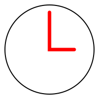
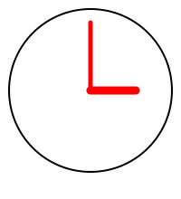
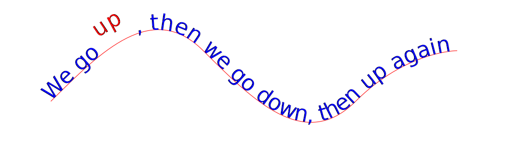

General Techniques
These techniques are considerations across different use cases.
Structure
There are two main aspects to the structure of an SVG document: the composition of shapes; and grouping and nesting.
Shape Composition
When creating an SVG, consider each individual shape for its function rather than just its initial appearance. Functional shapes can be styled, modified, and have new behavior added to them after the drawing is done.
In the following example, clock-bad-0.svg, the author has created a clock icon, which may appear satisfactory:
However, both the clock face and the hands are composed of a single path element. This means that if you decide to change any of the styling, such as the color of the stroke or the fill, or width of the stroke, you cannot change only the clock face or hands, but must change both together.
We can fix that by splitting the clock face and hands into two separate shapes (now a circle and a path element), which allows individual styling, as in the following example, clock-bad-1.svg:

However, there is still a problem, because the individual hands are a single element, which doesn't let them be styled differently (among other problems we'll describe next). We split the clock hands into two separate shapes, which allows individual styling, as in the following example, clock-bad-2.svg:

This is an improvement, and now allows individual image components not only to be styled differently, but also replaced independently much more easily, such as making a more elaborate hour hand with a simple minute hand. In addition, we've added another functional aspect to the clock hands. An author could (and should) anticipate that someone (whether the developer on their team, a stranger reusing their image with permission, or themselves at some later point) would want to animate the clock hands. The following example, clock-animate-0.svg, shows that adding a simple rotation animation is now easy:
Another small improvement will make this even more robust. By changing the origin of the individual hands from the end points to the center points, we ensure that additional transforms do not disrupt the hand animation, as in the following example, clock-animate-1.svg:
In addition to animation, other functional aspects of a shape are various kinds of interactivity, such as clicking or mouseovers.
By thinking about a shape's possible functions and behaviors, and not only its appearance, an author can make their SVG more reusable from the beginning.
Grouping and Nesting
In SVG, you can organize your images into logically related items using the g (“group”) element. For example, if you have an image of a family standing under a tree, next to their car, in front of their house, where each object is made up of several components, you can group together each object, and even groups of objects; you can have one group for the tree and its branches and leaves, one group for the house and its doors and windows, one group for the car and its windows and tires, and one group for all the people, with a nest group for each person and their heads, bodies, limbs, and clothes.
For authors, grouping related items makes it easier to maintain and to style common objects, to nest sets of groups, to select and reorder collected objects, and to hide and show groups individually. For users, grouping helps navigation, especially for use through a keyboard or a screenreader.
Authoring Tool Tip: In Adobe Illustrator and some other authoring tools, the g element corresponds to a layer. Each layer is a separate group, and the contents of the layer are the contents of the group.
TODO: add group example, nested groups
TODO: add group styling example
Document Order
An author should make sure that the SVG document has a document order that mirrors the intended reading order for the content, including any “hidden” text.
SVG uses a painter's model and absolute positioning for rendering graphical and textual content.
The painter's model means that the first element in the document is rendered first, the second element is rendered next, and so on, with each element that overlaps a previous element being drawn “on top” of that previous element, like the following example, painters-model.svg, in which the first element, a yellow square, is overlaid by the second element, a blue circle, which in turn is overlaid by the third element, a green line (hovering over each element will show the element below):
SVG absolute positioning layout means that each element is positioned precisely by its geometric (e.g. x,y) description, and that this position is not affected by any other element; this is unlike the common case in CSS, where adding content “pushes” the content after it in document order to a new position.
TODO: absolute positioning example
The combination of painter's model and absolute positioning lead to a circumstance where it is relatively easy for authors to inadvertently misorder the reading flow of a document. This risk is increased when the “invisible metadata” of the title and desc elements is added to the document, since it is easy for authors to overlook how the sequence of “hidden” text will flow with any visible text, or flow between multiple sets of “hidden” text.
A simple way to check the reading order of the document is to “select all” in your SVG document, and paste it into a text file. If the resulting text makes sense in this text file, then then reading order of your SVG document is acceptable.
Text and Text Equivalents
Unlike text in a raster image, which is simply pixels and shapes, text content in SVG can be included directly with the text element. This text content is machine–readable, indexible and searchable by search engines, findable though “find text” functionality, selectable with the keyboard or mouse, and translatable. As in HTML, SVG text can be styled (including different styles for fill and the stroke) and can use Web fonts (such as WOFF, TTF, and OTF formats).
The textPath element even permits text to run along the stroke of an SVG shape, something not possible in HTML alone, as in this example, textpath.svg:

Additionally, text is convenient for authoring, because it can be changed quickly and easily. The words themselves can be changed with little effort, and Web fonts afford a wide variety of styles that can substitute for logos or other stylized text.
Wherever possible, text in SVG should be actual textual content, and not simply elements shaped like text, because you lose all the benefits of text.
Text Equivalents
Sometimes, text is not enough for a particular use, either because the shapes can't be represented in a font (such as with custom-drawn interlocking words), or because the SVG image is graphical rather than textual.
In this case, the author should use the title and desc elements to provide text equivalents for all elements that are important for the user to understand the image.
The title element
The title element, when included as the first child of an element, lets the author provide a short, meaningful title for that element, similar to the alt attribute in HTML.
For example, if an SVG document contains an image of an apple that is important to the understanding of the document, the author should include a title element with the word “Apple”, like so:
<path d="…">
<title>Apple</title>
</path>
Screenreaders will treat the content of the title element as the “accessible name” in the accessibility tree.
Whenever possible, authors should use a visible text element to provide a label, for affordance for all users. Authors must not duplicate the text of a text element in a related title element, since that will be distracting, confusing, annoying, and counterproductive for screenreader users.
Browsers typically provide a tooltip (an information popup) when elements with a title are hovered over. Authors should resist the temptation to use this as a means to provide instructions for use, but should only use the title element to give a meaningful title to that element. Otherwise, users of screenreaders will have no context for the instructions.
The desc element
The desc element, when included as a child of an element, lets the author provide a longer description, when necessary, to supplement the title for that element. The desc element should be used sparingly.
For example, if an SVG document contains an image of an apple that is important to the understanding of the document, and the title alone might not convey the whole context, the author may include a desc element to supplement a title, like so:
<path d="…">
<title>Apple</title>
<desc>A large Granny Smith apple with a bite taken out of it,
sitting on the grass.</desc>
</path>
Screenreaders will treat the content of the desc element as a supplementary description in the accessibility tree, available on request.
TODO: title and desc, title for document and group
Accessibility Tip: .
Navigation and Activation
Many users navigate Web documents, including SVG documents, via the keyboard. This may be a serial navigation via the tab key, through keyboard shortcuts, activating links and interactive elements via the enter/return key, or various other means. Other users have navigation challenges by using touch-screens, often with a small surface (such as smart phones), and no way to distinguish between "hovering" and "clicking". Still other users have unsteady hands or limited mobility, and must navigate slowly or through single-switch controls.
Users of screenreaders or screen magnifiers may have difficulty locating navigable or activatable elements.
In order to meet the needs of these users, if an element is important, navigable, or activatable, it must have an indication in the markup that it can receive focus control.
The a and text elements are focusable by default.
All other elements, if they are to be focusable, must be have a tab-index attribute, with a positive value; generally, the value should be 1. SVG also includes a focusable attribute and property, but this is not well supported across browsers, and tab-index should be preferred for now.
In addition to being focusable, authors should make sure interactive elements are large enough for selection and activation by small-device users and users with unsteady hands.
TODO: add navigation example
Resizability
Many SVG images are defined to be of fixed dimensions, such as 150 pixels wide and 50 pixels high, just like raster images like JPEG or PNG format. However, the more common use case for SVG is to automatically resize to fit the available space. Raster images have intrinsic sizes and dimensions because they are composed of a fixed set of rows of pixels, and the appearance of those pixels would be distorted if displayed at a larger or smaller size, producing artifacts called pixelization. By contrast, SVG images are drawing instructions for an image that are equally crisp at any size, called vectors, a characteristic called scalability (thus the name Scalable Vector Graphics). The fixed-size output of many SVG generators is not optimized for use on the Web, where different devices have variably-sized screens, and where an SVG image may be referenced in an HTML file at different sizes than the original dimensions.
It's simple to take advantage of SVG's native scalability, while still defining the abstract native dimensions of the image. The SVG root element has three attributes to control these characteristics: the width; height; and viewBox attributes.
The width and height attributes
The width and height attributes respectively specify the horizontal and vertical dimensions of the image. The attribute values may have units, such as pixels (150px) or centimeters (7cm), or they may omit units dimensions and be interpreted abstractly in user units, e.g. relative dimensions that scale to the size of the container.
The viewBox attribute
The viewBox attribute sets the viewport of the SVG via 4 space-separated numbers, in the form "x y width height".
An SVG image has an infinite canvas, with the 0,0 origin at the top-left point, and positive values moving down and to the right (i.e. the fourth quadrant of a traditional Cartesian coordinate space); a graphical element may be located at any point in this space, whether at a positive or negative x or y. The viewBox attribute controls which section of this infinite canvas is visible in the viewport.
For example, the following code sample shows an SVG root element that has a viewport that starts at 0,0, and has a width of 100 units and a height of 50 units:
<svg viewBox="0 0 100 50">
This means that any graphical shape that is contained (fully or partially) within that space will be visible in the viewport (at least partially, based on the position and overlap).
To extend this example, the following code sample shows the same viewBox, and also includes a width and height:
<svg width="20" height="10" viewBox="0 0 100 50">
This will produce an SVG of a fixed size (20 pixels by 10 pixels) with a 2:1 dimension ratio, and a viewport that includes all elements that are within the confines of the viewport.
Setting the width and height attributes to 100% tells the browser to use the full available space of the container for the units. This means that the SVG will take up full width and height of the image (img) element in HTML, or the whole browser window if the SVG image is viewed as a stand-alone document.
<svg width="100%" height="100%" viewBox="0 0 150 70">
This is actually the default behavior for an SVG image that doesn't have explicit width and height attributes, so you can get the same effect by only using the viewBox attribute and omitting the width and height attributes:
<svg viewBox="0 0 150 70">
Because SVG is case-sensitive (a legacy of its XML origins), the attribute viewBox must have a capital “B”. It's a common mistake to type viewbox instead, which is easily overlooked and frustrates debugging. SVG uses a mix of attribute-name delimiters, including medial camelCase (“viewBox”), lower-case compound (“viewbox”), and kebab-case (“view-box”), so this is a common error. We're sorry about that.
We explore the viewBox attribute more in the section on Icons and Symbols.
Resizability Example
In this example, we show an auto-sizing SVG in an HTML img element at half-size, full-size, double-size, and triple-size, all referencing the same SVG document, auto-resizable.svg:
Note that although vector images have crisp borders and lines at all sizes, there are still perceivable differences at different sizes. For example, a curved corner may appear too rounded and text may appear too large if a small icon is displayed at a large size, or a complex image may appear more cluttered and hard to distinguish if displayed at a small size. Some of these vector artifacts may be reduced by changing styling or hiding or showing different elements at different sizes, using Media Queries as described in the section on Responsive Images.
Accessibility Tip: Making images auto-scaling can help users with low vision or mobility issues, since they can increase the size of the image to suit their needs, making it easier to see details or to click on interactive elements.
Responsive Images
.
TODO: add media query example
Note that Media Queries may not work in all authoring tools.
We explore the viewBox attribute more in the section on Resizability.
Animation
.
TODO: talk about distraction, epilepsy, and slow movement
ARIA: Markup Attributes for Accessible Rich Internet Applications
.
TODO: talk about ARIA